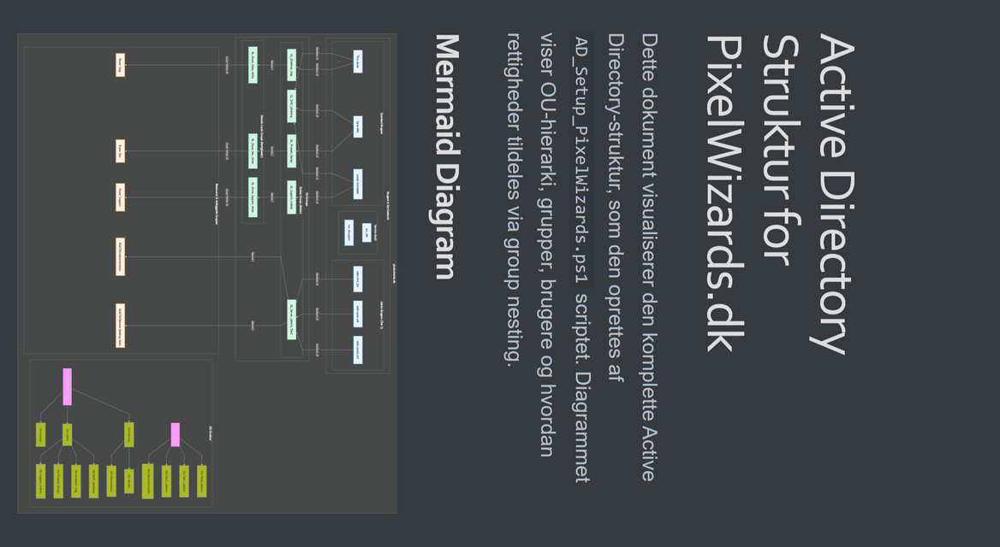

Projektoversigt
Dette projekt var min afsluttende svendeprøve som datatekniker. Opgaven var at designe og implementere en komplet, redundant og skalerbar PaaS-infrastruktur for en fiktiv spil-virksomhed, "Pixel Wizards ApS", der udgiver spil via en SaaS-model.
Overordnet Arkitektur
Infrastrukturen blev designet fra bunden med fokus på High-Availability, sikkerhed og automatisering.
Kernekomponenter:
- Perimeter-sikkerhed: En HA-klynge af 2x **FortiGate 200E** firewalls, hvorpå al inter-VLAN routing blev håndteret centralt.
- Virtualisering & Compute: Et 3-nodes **Proxmox VE-cluster** bygget på ProLiant Gen10 servere.
- Distribueret Storage: Et hyper-converged **Ceph-cluster** for skalerbar og fejltolerant lagring til alle VM'er og containere.
- Backup & Restore: En dedikeret **Proxmox Backup Server (PBS)** for online backup, suppleret af en offline backup-server for 3-2-1 compliance.
- Applikations-platform: Alle tjenester (web, spil, mail, etc.) blev deployet som **containere** på dedikerede VM'er for at maksimere skalerbarhed og muliggøre Infrastructure as Code (IaC).
Projektinformation
- Kategori: Fuld Infrastruktur Design
- Teknologier: Proxmox, Ceph, Ansible, PowerShell, Active Directory, FortiGate, DFS
- Projekt Dato: Januar - Februar, 2026
Kernekompetencer i Projektet
- Virtualisering: Opsætning af Proxmox VE cluster med Ceph for hyperkonvergeret storage (HCI).
- Netværk & Sikkerhed: Konfiguration af FortiGate Firewall (HA), VLAN-segmentering og routing.
- Microsoft Services: Implementering af redundant Active Directory, DNS, DHCP med failover og DFS med replikering.
- Automatisering: Brug af Ansible til udrulning af klienter og PowerShell til konfiguration af Windows-roller.
- Systematisk Fejlsøgning: Identifikation og løsning af komplekse fejl i DHCP, Proxmox API og netværks-routing.
Arkitektur & Design
Løsningens design er baseret på best-practice principper for redundans og sikkerhed. Active Directory er struktureret efter Microsofts Tiered Administration Model for at adskille administrative rettigheder og minimere angrebsfladen.

Diagrammet ovenfor viser den logiske opbygning af Active Directory, inklusiv OU-hierarki og et eksempel på rettighedstildeling via gruppe-nesting (AGDLP-princippet).
Udvalgt Fejlsøgnings-case: DHCP Failover
Problem: Nye klienter på VLAN 13 kunne ikke opnå en IP-adresse fra DHCP-serverne.
Analyse: En analyse af server-logs og service-bindings viste, at DHCP-servicen ikke lyttede på det korrekte netværksinterface. Rodårsagen blev sporet til en forældet AD-autorisering, der forhindrede servicen i at binde til alle interfaces efter en IP-ændring.
Løsning: De forkerte AD-objekter blev fjernet med Remove-DhcpServerInDC, hvorefter serverne blev korrekt gen-autoriseret med Add-DhcpServerInDC. En genstart af DHCP-servicen løste problemet permanent.